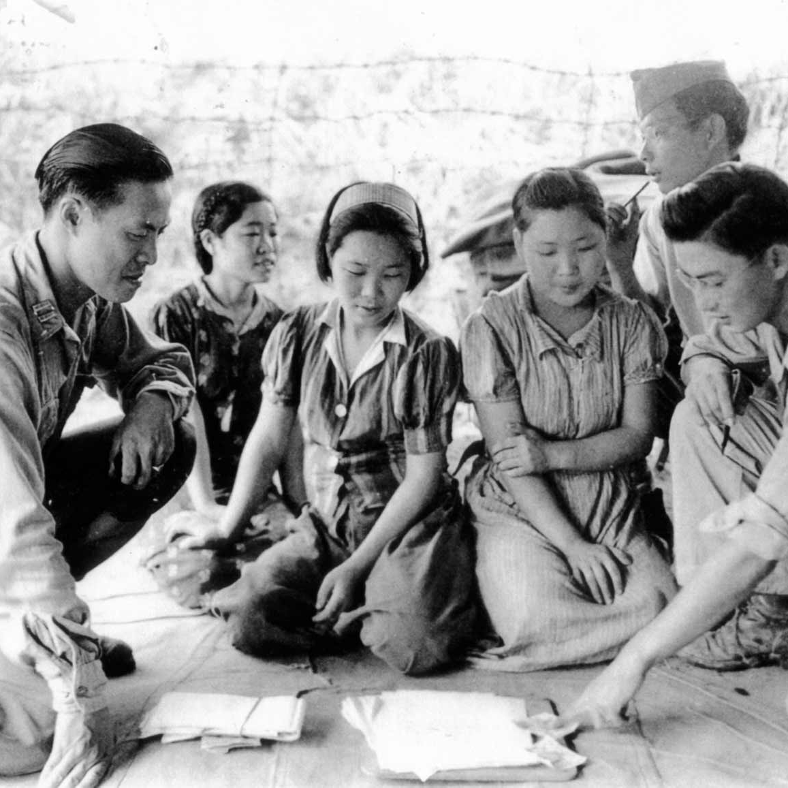

Comfort women were women during World War 2 who were allegedly forced into sexual slavery by Japanese men. This included Chinese, Filipino, Taiwanese and Indonesian women, the large majority of women being Korean. There were believed to be 200,000 women forced into these ‘Comfort Stations’, which were brothels created by the Japanese army. The women would be expected to ‘serve’ as many as 60 to 70 soldiers per day. This subject is still an ongoing controversial issue between Japan and Korea to this day.